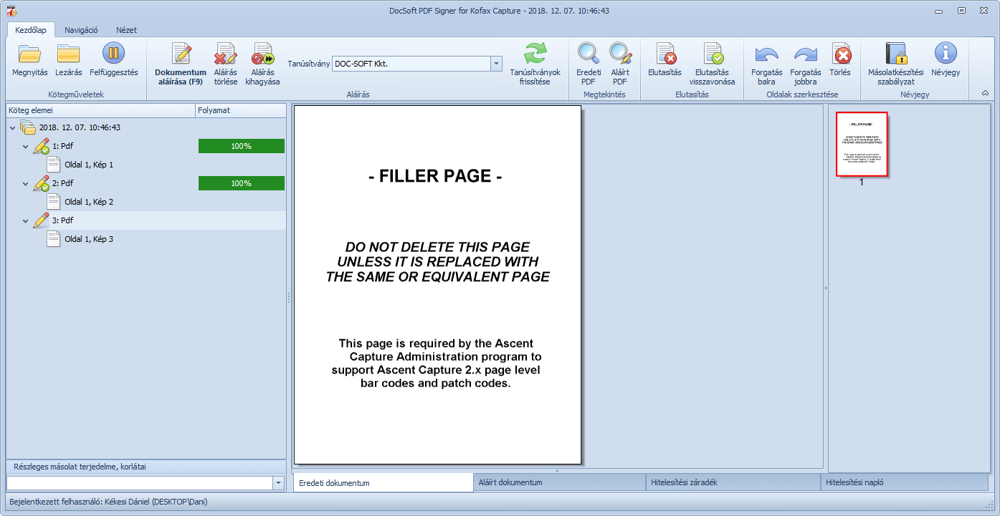

A megnyitott kötegben lévő dokumentumok hitelesítése a

A felhasználó feladata a megnyitott kötegben lévő szkennelt dokumentumok másolatkészítési jogszabályok szerinti tartalmi vagy formai összehasonlítása a papíralapú eredetikkel. Amennyiben a szkennelt dokumentum megegyezik a papíralapú eredetivel, úgy az iratot a Dokumentum aláírása vagy az F9 gyorsbillentyű segítségével kell hitelesíteni. A hitelesítést követően a program automatikusan a következő hitelesítésre váró iratra ugrik.
Ha az irat kisebb javításra szorul, pl. oldalakat kell elforgatni vagy törölni, akkor az a hitelesítés előtt a
Ha az adminisztrátor engedélyezte, akkor bizonyos esetekben lehetőség van a hitelesítés kihagyására is. Ekkor az eredeti, nem hiteles dokumentum fog továbbításra kerülni a célrendszerbe.
Miután a kötegben lévő összes iratot hitelesítettük vagy elutasítottuk, zárjuk le a köteget a Lezárás ikonnal.